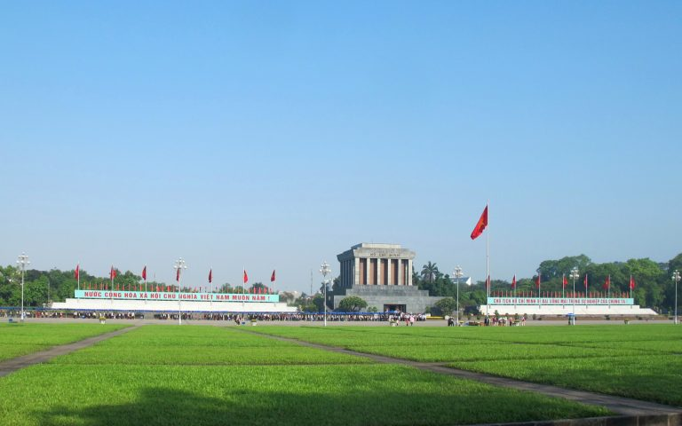
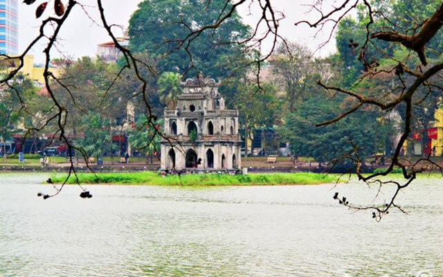
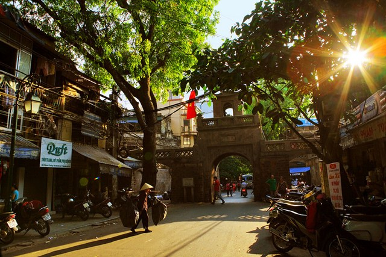
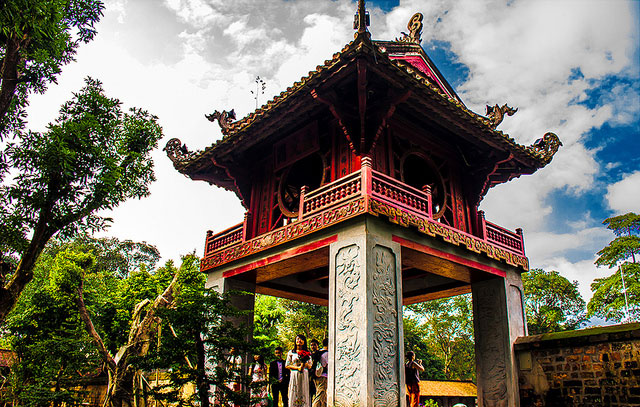
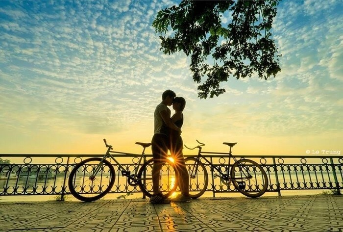
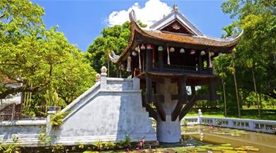
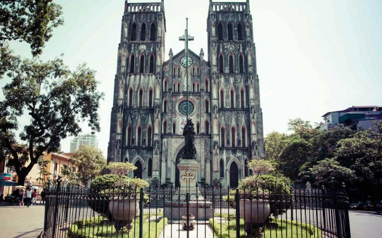

Mục Lục
Quảng trường Ba ĐìnhHồ Gươm
Phố cổ Hà Nội
Văn Miếu – Quốc Tử Giám
Hồ Tây
Chùa Một Cột
Nhà thờ lớn Hà Nội
Chùa Trấn Quốc
Nhà tù Hỏa Lò
Hoàng thành Thăng Long
Cầu Long Biên
Chợ Đồng Xuân
Cung văn hóa hữu nghị Việt – Xô
Một số điểm tham quan du lịch ở Hà Nội hấp dẫn nhất
Nhắc đến những địa điểm du lịch Hà Nội thì không thể không kể tới Chợ Đồng Xuân, Văn Miếu Quốc Tử Giám, Quảng trường Ba Đình, Hồ Hoàn Kiếm, chùa Một Cột, Phố cổ Hà Nội, Chùa Trấn Quốc, Hoàng thành Thăng Long, phố bích họa Phùng Hưng, Nhà thờ Lớn Hà Nội, Ga Hà Nội … Đây đều là những địa điểm check in Hà Nội đang được giới trẻ yêu thích nhất, Trong bài viết hôm nay, cùng Dulichso.vn lần lượt khám phá những địa danh này ngay dưới đây nhé!
Bảng giá vé tham quan
| Địa điểm | Giá vé người lớn | Giá vé trẻ em |
|---|---|---|
| Văn Miếu Quốc tử Giám | 30.000 đồng/ người lớn | 15.000 đồng/trẻ em |
| Nhà tù Hỏa Lò | 30.000 đồng/ người lớn | miễn phí trẻ em dưới 15 tuổi |
| Đền Ngọc Sơn | 30.000 đồng/người lớn | miễn phí trẻ em dưới 15 tuổi |
| Bảo Tàng Hồ Chí Minh | 25.000 đồng/ khách quốc tế | khách Việt Nam miễn phí |
| Bảo tàng Lịch sử Quốc gia | 40.000 đồng/ người lớn | 10.000 đồng/trẻ em từ 6-10 tuổi |
1. Quảng trường Ba Đình – Lăng Bác
Quảng trường Ba Đình là quảng trường lớn nhất Việt Nam, nằm trên đường Hùng Vương và trước Lăng Chủ tịch Hồ Chí Minh

Quảng Trường Ba Đình
. Quảng trường này còn là nơi ghi nhận nhiều dấu ấn quan trọng trong lịch sử Việt Nam. Đặc biệt, vào ngày 2 tháng 9 năm 1945, Chủ tịch Chính phủ Cách mạng lâm thời Việt Nam Dân chủ Cộng hòa Hồ Chí Minh đã đọc bản Tuyên ngôn độc lập khai sinh ra nước Việt Nam Dân chủ Cộng hòa. Đây cũng là nơi diễn ra các cuộc diễu hành nhân dịp các ngày lễ lớn của Việt Nam, và cũng là một địa điểm tham quan, vui chơi, dạo mát của du khách và người dân Hà Nội.
2. Hồ Gươm
Hồ Gươm hay hồ Hoàn Kiếm là một trong những nơi nên đến ở Hà Nội khi du lịch thủ đô. Nằm ở giữa trung tâm, Hồ Gươm được ví như trái tim của thành phố ngàn năm tuổi này.. Mặt hồ như tấm gương lớn soi bóng những cây cổ thụ, những rặng liễu thướt tha tóc rủ, những mái đền, chùa cổ kính, tháp cũ rêu phong, các toà nhà mới cao tầng vươn lên trời xanh.
Một trải nghiệm thú vị dành cho khách du lịch là đi bộ một vòng hồ, bạn sẽ được thấy một Hà Nội cổ kính nhưng vẫn đầy hiện đại hiện lên thật rõ ràng. Bên cạnh hồ là những công trình kiến trúc như tháp Bút, đài Nghiên, cầu Thê Húc dẫn vào đền Ngọc Sơn, đền vua Lê Thái Tổ, tháp Hoà Phong,…

3. Phố cổ Hà Nội – địa điểm du lịch hấp dẫn
Muốn tìm hiểu về cuộc sống, văn hóa và con người Tràng An thì bạn đừng bỏ qua phố cổ – một trong những địa điểm du lịch ở Hà Nội đầy thú vị và hấp dẫn với du khách. Phố cổ Hà Nội nằm ở phía Tây và phía Bắc của Hồ Hoàn Kiếm, là nơi tập trung đông dân cư sinh sống có 36 phố phường. Mỗi con phố ở đây chủ yếu tập trung bán một loại mặt hàng nhất định. Lang thang ở khu phố và thưởng thức ẩm thực phố cổ như phở Bát Đàn, chả cá Lã Vọng, bún chả hàng Mành, mì vằn thắn Đinh Liệt, bún ốc nguội Ô Quan Chưởng,…sẽ khiến chuyến đi của bạn đáng nhớ hơn rất nhiều! Lựa chọn nhiều khách sạn Phố Cổ để tận hưởng ẩm thực nơi đây.

Phố cổ Hà Nội buổi sáng sớm
4. Văn Miếu – Quốc Tử Giám
Văn Miếu Quốc Tử Giám được xem là biểu tượng của tri thức, của nền giáo dục Việt Nam. Đây là nơi thờ phụng các bậc Tiên thánh, Tiên sư của đạo Nho và Tư nghiệp Quốc Tử Giám Chu Văn An – người thầy tiêu biểu về đạo cao, đức trọng của nền giáo dục Việt Nam.

5. Hồ Tây – điểm du lịch Hà Nội thú vị
Hồ Tây một trong những danh thắng nổi tiếng của thủ đô Hà Nội, đây được coi là một “sân khấu khổng lồ soi bóng mây trời và cảnh quan thành phố”. Khung cảnh ven hồ Tây vô cùng thi vị, mơ mộng. Bao quanh hồ là những hàng cây xanh cao thẳng tắp, rồi những bồn hoa , thềm cỏ xanh mướt mọc xung quanh đã tạo ra một khung cảnh đặc biệt cho hồ Tây

Cái làm nên nét đặc biệt cho Hồ Tây, phân biệt nó với các hồ khác ở Hà Nội không chỉ là khung cảnh mà còn là sắc nước. Sắc nước mỗi mùa đều có sự thay đổi một cách kì diệu và ngoạn mục theo thời tiết, lúc xanh, lúc xám, rồi khi sáng khi tối… Và khung cảnh Hồ Tây trở nên rực rỡ thăng hoa nhất có lẽ là vào khoảnh khắc cuối ngày- khi ánh hoàng hôn buông xuống bao phủ lên cảnh vật,cùng cái mờ ảo của ánh đèn đường hắt xuống mặt nước tạo nên một khung cảnh cực kì huyền ảo, lãng mạn.
6. Chùa Một Cột
Chùa Một Cột được xây dựng năm 1049 dưới triều đại nhà Lý, là một trong những biểu tượng của thủ đô Hà Nội bên cạnh tháp Rùa và Khuê Văn Các. Bên cạnh ý nghĩa về tâm linh thì chùa Một Cột là công trình kiến trúc độc đáo có tính thẩm mỹ cao, được thể hiện qua nghệ thuật tạo hình trên mặt nước, điêu khắc, hội họa… phản ánh giá trị văn hóa cổ xưa cũng như mang đậm tính dân tộc.

Cái làm nên nét đặc biệt cho Hồ Tây, phân biệt nó với các hồ khác ở Hà Nội không chỉ là khung cảnh mà còn là sắc nước. Sắc nước mỗi mùa đều có sự thay đổi một cách kì diệu và ngoạn mục theo thời tiết, lúc xanh, lúc xám, rồi khi sáng khi tối… Và khung cảnh Hồ Tây trở nên rực rỡ thăng hoa nhất có lẽ là vào khoảnh khắc cuối ngày- khi ánh hoàng hôn buông xuống bao phủ lên cảnh vật,cùng cái mờ ảo của ánh đèn đường hắt xuống mặt nước tạo nên một khung cảnh cực kì huyền ảo, lãng mạn.
7. Nhà thờ lớn Hà Nội
Nằm ở 40 phố Nhà Chung, phường Hàng Trống, Nhà thờ lớn là một trong những điểm đến thú vị ở Hà Nội, nơi lui tới không chỉ của các tín đồ theo đạo mà còn là địa điểm quen thuộc của giới trẻ, khách du lịch tứ phương. Nhà thờ được thiết kế theo phong cách kiến trúc Gothic trung cổ châu Âu với bức tường xây cao, có mái vòm và nhiều cửa sổ. Bên trong nhà thờ, khu cung thánh chạm trổ hoa văn bằng gỗ sơn son thiếp vàng kết hợp với hệ thống tranh Thánh bằng kính màu. Cảm giác như được đứng trong một lâu đài cổ kính cùng điệu nhạc cổ điển, chắc hẳn bạn đang rất muốn thử phải không.
8. Chùa Trấn Quốc
Chùa Trấn Quốc là một trong những ngôi chùa cổ nhất ở Hà Nội và Việt Nam, nằm trên một bán đảo phía Nam của Hồ Tây, ở gần cuối đường Thanh Niên, quận Ba Đình, Hà Nội. Từng là trung tâm Phật giáo của kinh thành Thăng Long vào thời Lý và thời Trần với những giá trị về lịch sử và kiến trúc, chùa Trấn Quốc nổi tiếng là chốn cửa Phật linh thiêng, là điểm thu hút rất nhiều tín đồ Phật tử, khách tham quan, du lịch trong và ngoài nước. Đầu năm 2017, chùa Trấn Quốc được lọt vào danh sách 16 ngôi chùa đẹp nhất thế giới do báo Daily Mail (Anh) bình chọn. Hãy ghé thăm chùa Trấn Quốc, đảm bảo bạn sẽ ngạc nhiên trước không gian tĩnh lặng, vẻ đẹp nên thơ của “đóa sen” nổi trên mặt nước hồ Tây.

9. Nhà tù Hỏa Lò
Nhà tù Hỏa Lò được thực dân Pháp xây dựng từ năm 1896 với tên gọi “Maison Central”, là nơi giam giữ những chiến sĩ cách mạng chống lại chế độ thực dân. Đây là một trong những công trình kiên cố vào loại bậc nhất Đông Dương khi đó. Sau ngày giải phóng thủ đô, nhà tù được đặt dưới quyền của chính quyền cách mạng. Từ năm 1963 đến 1975, nơi đây còn được sử dụng để làm nơi giam giữ những phi công Mỹ bị quân đội Việt Nam bắn rơi trong cuộc chiến tranh phá hoại miền Bắc. Ngày nay nhà tù Hỏa Lò trở thành di tích lịch sử đặc biệt với nhiều tư liệu quý giá được trưng bày và giữ gìn cẩn thận, thu hút hàng ngàn du khách trong và ngoài nước tới tham quan mỗi năm.
10. Hoàng thành Thăng Long
Hoàng thành Thăng Long là quần thể di tích gắn liền với sự phát triển của Thăng Long – Hà Nội, được các triều vua xây dựng trong nhiều giai đoạn lịch sử. Đây cũng là di tích quan trọng bậc nhất trong hệ thống các di tích lịch sử của Việt Nam. Đến Hoàng thành Thăng Long du khách có thể tham quan những địa điểm nổi bật như khu khảo cổ học số 18 Hoàng Diệu, Đoan Môn, Điện Kính Thiên, Bắc Môn (thành Cửa Bắc)…
11. Cầu Long Biên
Nhắc đến những địa điểm du lịch Hà Nội thì không thể không kể tới cầu Long Biên. Cầu được Pháp xây dựng từ năm 1898, là cây cầu thép đầu tiên bắc qua sông Hồng. Cầu Long Biên gắn liền với hai cuộc kháng chiến chống Pháp và chống Mỹ của dân tộc, được coi là biểu tượng của Hà Nội trong những năm tháng khó khăn vất vả.

12. Chợ Đồng Xuân – địa điểm tham quan ở Hà Nội không thể bỏ qua
Chợ Đồng Xuân là một trong những chợ lớn nhất ở Hà Nội. Nơi đây bán rất nhiều mặt hàng đa dạng từ thực phẩm, may mặc cho tới đồ tiêu dùng phù hợp với nhiều sở thích cũng như các đối tượng khác nhau. Vì là chợ đầu mối, thế nên các mặt hàng ở đây cũng rẻ hơn so với những nơi khác. Đừng quên lựa chọn cho mình một vài món đồ lưu niệm khi tới đây tham quan nhé.
13. Cung văn hóa hữu nghị Việt – Xô
Cung văn hóa hữu nghị Việt – Xô là công trình được khởi công trên nền nhà Đấu Xảo cũ từ thời Pháp đã bị phá hủy. Tổng diện tích của cung văn hóa là 3,2 ha bao gồm 3 khôi nhà chính: nhà biểu diễn, nhà học tập, nhà kĩ thuật. Đây là công trình kiến trúc, văn hóa dành cho các buổi biểu diễn nghệ thuật, triển lãm, các hội thảo khoa học, các cuộc mít tinh hay sự kiện văn hóa lớn… Bên cạnh đó, nơi đây cũng là địa điểm vui chơi, giải trí của nhiều bạn trẻ thủ đô vào các buổi tối trong tuần.